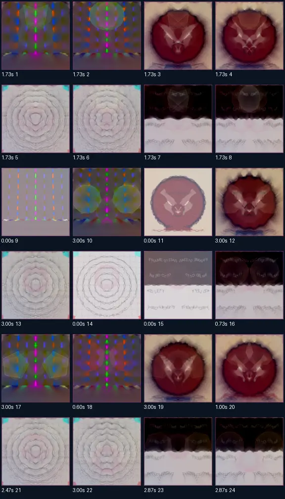
butterchurn · limitedphat_It′sJustNumbers_remix3
An abstract visualisation built around pink and magenta. The selected frames suggest ring-like forms. The available frames do not establish a reliable movement pattern.
Inspect supporting evidence → butterchurn · described
butterchurn · describedcope + martin - mother-of-pearl
An abstract visualisation built around turquoise and violet. With static inputs, output motion includes local warping.
Inspect supporting evidence →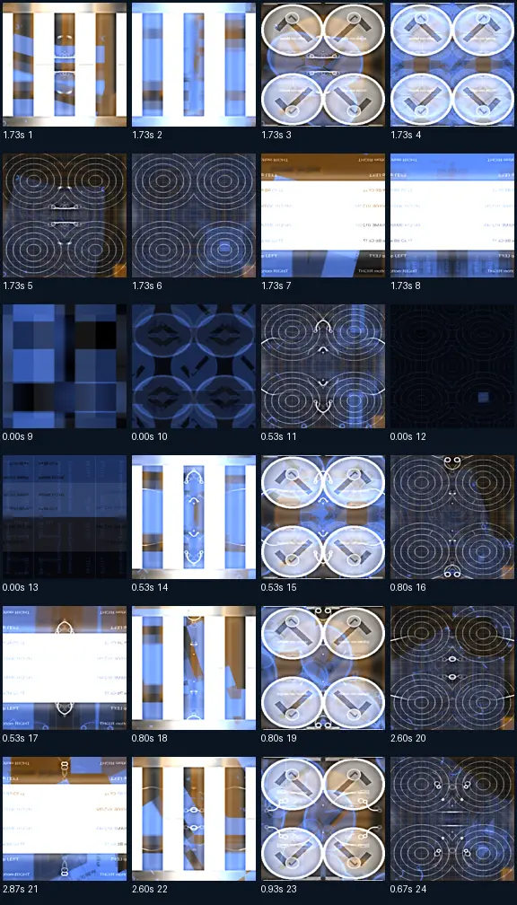
butterchurn · describedfiShbRaiN + Flexi - witchcraft unleashed
A bright visualisation built around blue and orange. The selected frames suggest ring-like forms and striped patterns with blocky shapes. With static inputs, output motion includes local warping.
Inspect supporting evidence → butterchurn · described
butterchurn · describedAderrasi - Contortion (Wide Twist Mix)
An abstract visualisation built around turquoise and green. The selected frames suggest ring-like forms with smooth gradients. With static inputs, output motion includes local warping, counterclockwise rotation, clockwise rotation.
Inspect supporting evidence →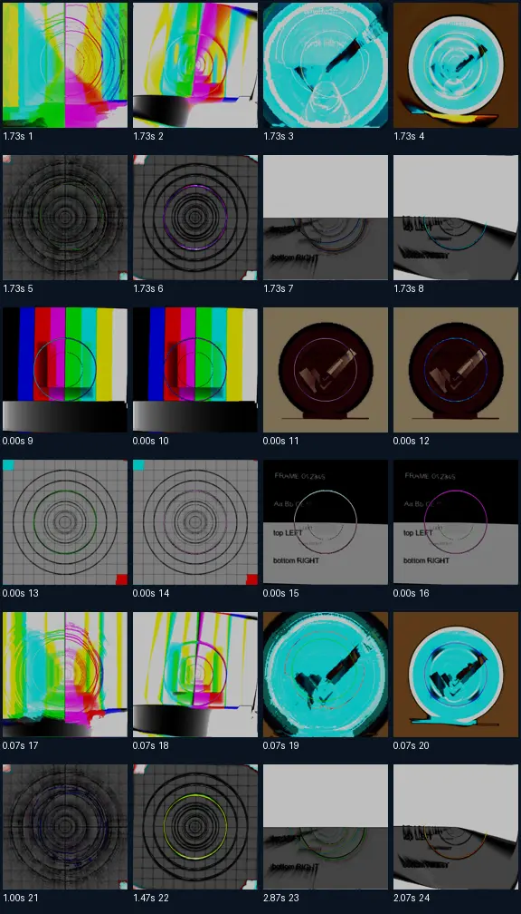
projectm · describedfed - slowfast 1-1
An abstract visualisation built around turquoise and red. The selected frames suggest ring-like forms with smooth gradients. With static inputs, output motion includes outward expansion, local warping.
Inspect supporting evidence → projectm · described
projectm · describedPhat + EoS - destroy me c
An abstract visualisation built around cyan and blue. The selected frames suggest ring-like forms and fine particles with soft glow. With static inputs, output motion includes local warping.
Inspect supporting evidence →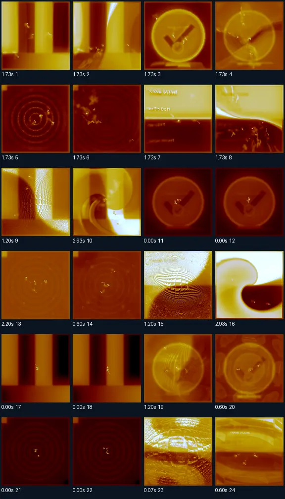
projectm · describedLuxXx - Flame Dance Iic
An abstract, highly saturated visualisation built around red and orange. The selected frames suggest ring-like forms with soft edges. With static inputs, output motion includes outward expansion, local warping. Fine source detail is strongly reduced in many tested frames.
Inspect supporting evidence →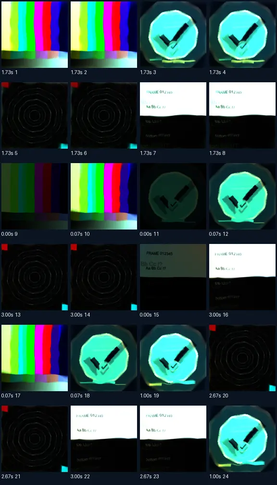
butterchurn · limitedAderrasi - Airhandler (Last Breath - Calm)
An abstract visualisation built around turquoise and green. The selected frames suggest ring-like forms and fine particles with soft glow. The available frames do not establish a reliable movement pattern.
Inspect supporting evidence →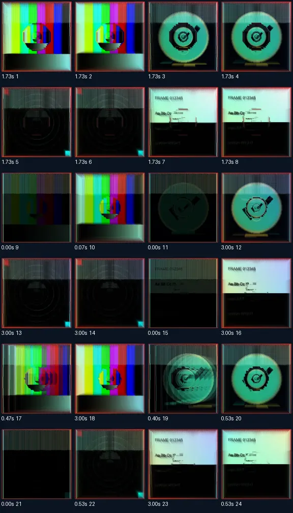
butterchurn · limitedZylot & Rovastar - A Million Miles From Earth (Fog Of Time Mix (Vessel reMix) )
An abstract visualisation built around turquoise and red. The selected frames suggest ring-like forms. The available frames do not establish a reliable movement pattern.
Inspect supporting evidence →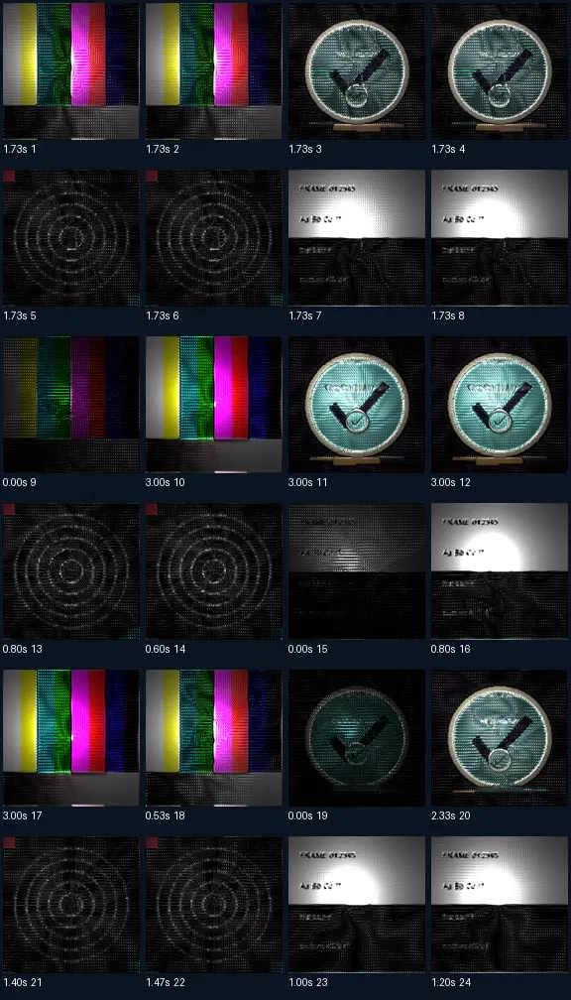
projectm · limitedStahlregen & flexi + Geiss + martin + Rovastar - Tides (martin's metallics)
A dark visualisation built around pink and turquoise. The selected frames suggest ring-like forms and fine particles with neon-like glow. The available frames do not establish a reliable movement pattern.
Inspect supporting evidence →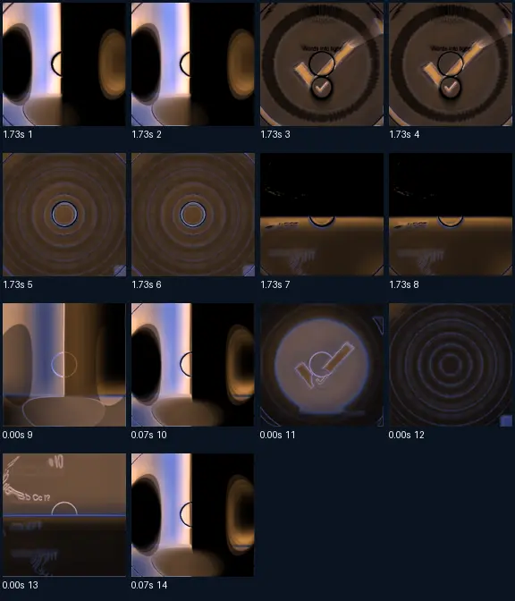
projectm · limitedTonyMilkdrop - Tricolors [Flexi - menage a trois + $this shall not retain] --- Isosceles edit
A dark visualisation built around red. The selected frames suggest ring-like forms. The available frames do not establish a reliable movement pattern.
Inspect supporting evidence →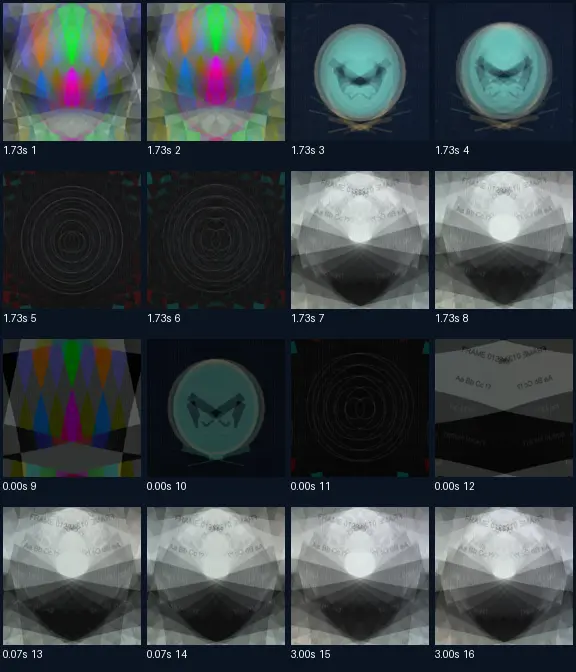
butterchurn · limitedIllusion & Boz - Lord Of Stars 1
An abstract visualisation built around blue and cyan. The selected frames suggest ring-like forms. The available frames do not establish a reliable movement pattern.
Inspect supporting evidence →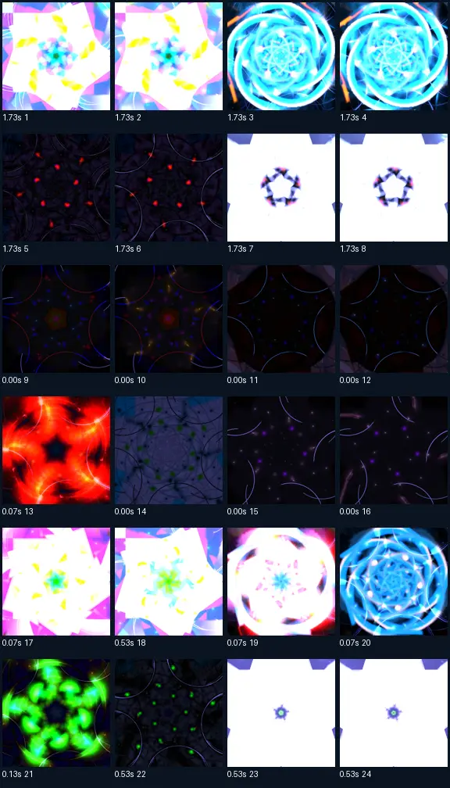
projectm · describedLuxXx - centeroftheuniverse (n30n) 1
A bright visualisation built around blue and turquoise. The selected frames suggest fine particles and ring-like forms with soft glow. With static inputs, output motion includes local warping, outward expansion. Some sampled frames wash out to almost pure white.
Inspect supporting evidence → projectm · limited
projectm · limitedyin - 190 - Temporal fluctuations
An abstract visualisation built around blue and cyan. The selected frames suggest striped patterns with smooth gradients. The available frames do not establish a reliable movement pattern. Some sampled frames wash out to almost pure white.
Inspect supporting evidence →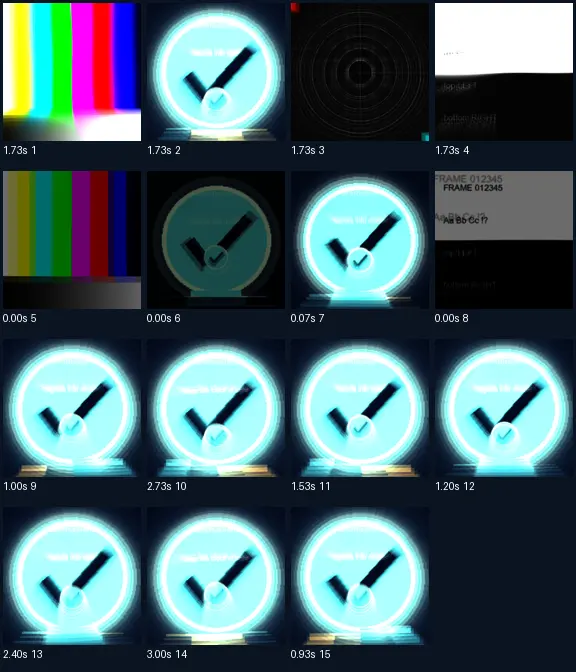
butterchurn · limitedRocke - Personal Comet
An abstract visualisation built around turquoise and red. The selected frames suggest fine particles with soft glow. The available frames do not establish a reliable movement pattern.
Inspect supporting evidence →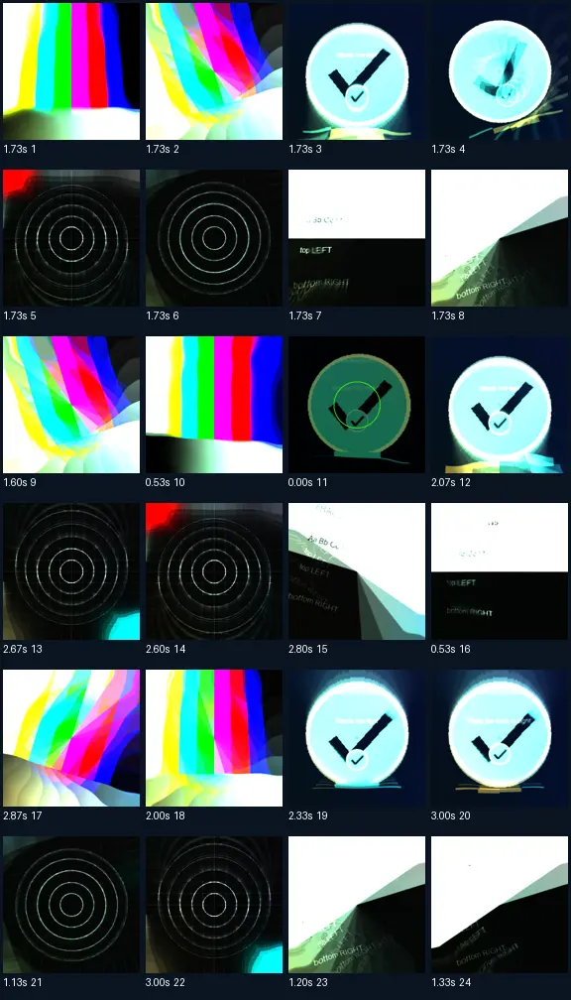
butterchurn · limitedyin - 140 - Ohm to the stars
An abstract visualisation built around turquoise and green. The selected frames suggest ring-like forms and fine particles with smooth gradients. The available frames do not establish a reliable movement pattern.
Inspect supporting evidence →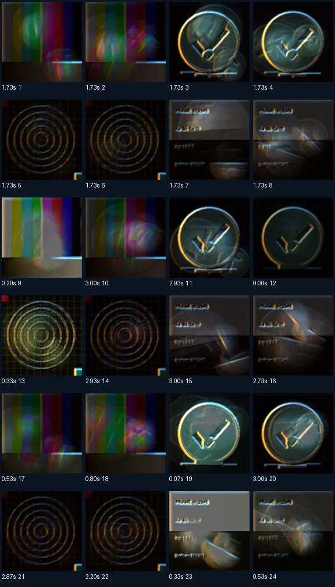
projectm · describedRovastar + Loadus + Geiss - FractalDrop (Cauliflower Mix)
A dark visualisation built around orange and cyan. The selected frames suggest fine particles with soft glow. With static inputs, output motion includes local warping.
Inspect supporting evidence →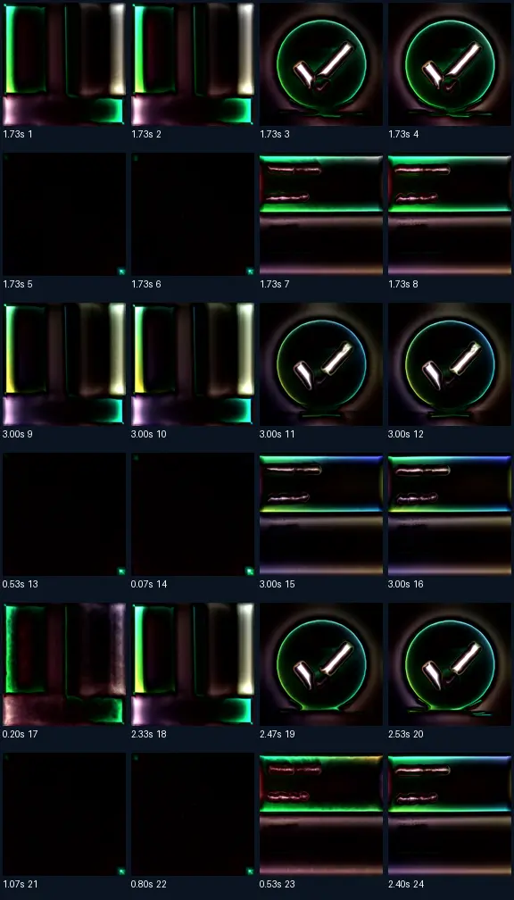
butterchurn · describedAdamFx 2 Geiss, Zylot and Flexi - Reaction Diffusion 3 (Overload Mix 2) EATIT4 (BCCNJ4)
A dark visualisation built around green and turquoise. The selected frames suggest ring-like forms and fine particles with smooth gradients. Textured frames remain visually stationary in the sampled window.
Inspect supporting evidence → projectm · limited
projectm · limitedshifter - interference field lens (beta 4b) - mash0000 - lovecraftian drama horror made sick flesh --- Isosceles edit1
A dark visualisation built around largely monochrome tones. The available frames do not establish a reliable movement pattern. Some sampled frames are almost completely black.
Inspect supporting evidence →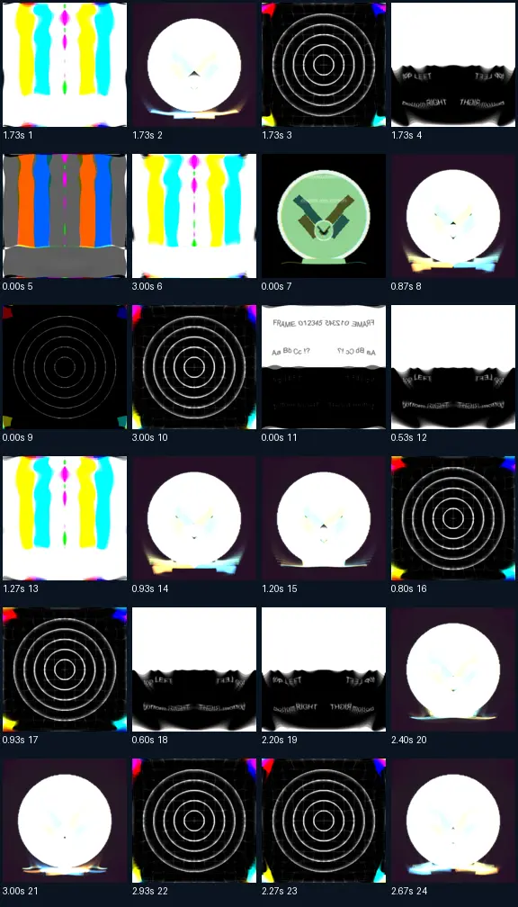
butterchurn · describedGeiss - Downward Spiral - color invert mirror x
An abstract visualisation built around violet and orange. The selected frames suggest ring-like forms and fine particles with soft glow. With static inputs, output motion includes outward expansion, local warping.
Inspect supporting evidence → butterchurn · described
butterchurn · describedLuxXx - Hurty Soul I
An abstract, highly saturated visualisation built around pink and green. The selected frames suggest ring-like forms with soft glow. With static inputs, output motion includes local warping.
Inspect supporting evidence →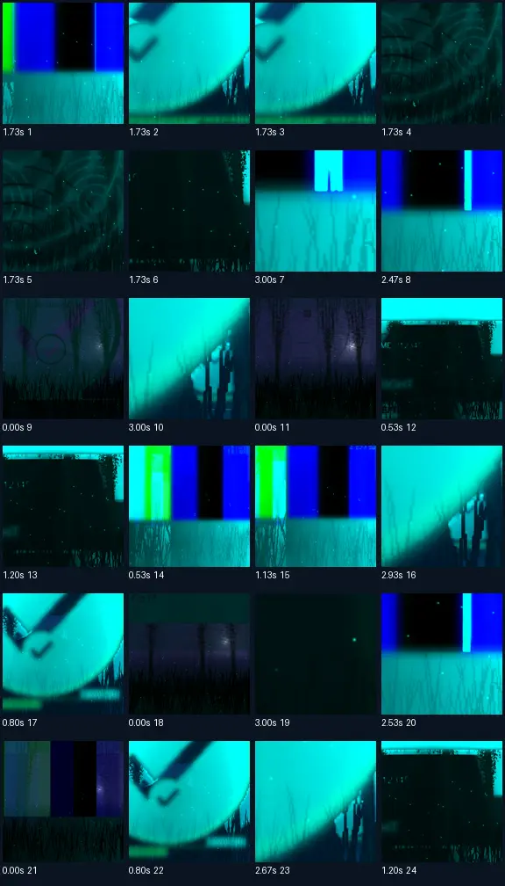
butterchurn · describedmartin - night in the forest
A dark, highly saturated visualisation built around turquoise. The selected frames suggest fine particles and ring-like forms with soft glow. With static inputs, output motion includes leftward drift, outward expansion, upward drift. Fine source detail is strongly reduced in many tested frames.
Inspect supporting evidence → butterchurn · described
butterchurn · describedReenen - phoenix
An abstract visualisation built around red and turquoise. The selected frames suggest ring-like forms. With static inputs, output motion includes downward drift, local warping.
Inspect supporting evidence → butterchurn · limited
butterchurn · limitedGeiss - Skin Dots 11 Crossfire Composite
An abstract visualisation built around turquoise and cyan. The selected frames suggest fine particles and ring-like forms. The available frames do not establish a reliable movement pattern. Fine source detail is strongly reduced in many tested frames.
Inspect supporting evidence →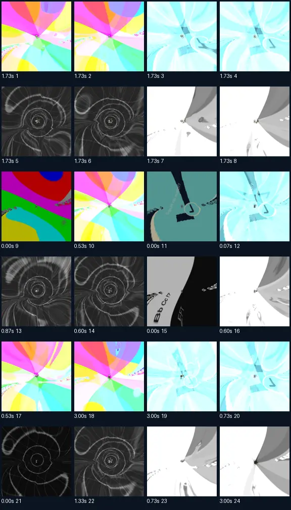
butterchurn · describedRovastar - Sunflower Passion (Simple Mix)_phat+Eo.S. werid_angle_mix
A bright visualisation built around orange and turquoise. The selected frames suggest fine particles and ring-like forms with soft glow. With static inputs, output motion includes local warping, downward drift, inward contraction.
Inspect supporting evidence →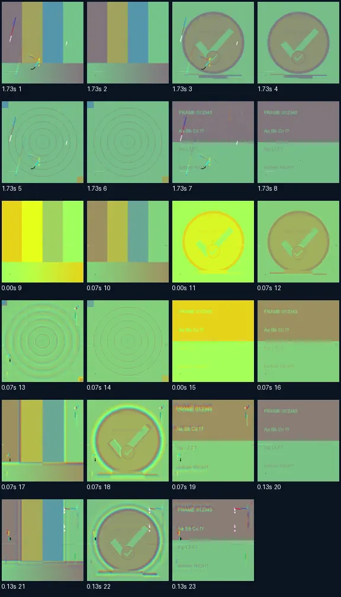
projectm · limitedfiShbRaiN - witchcraft (metropolish remix) - test - tillex - mpreten' ya don' liq me bawlce
An abstract visualisation built around green and yellow. The selected frames suggest ring-like forms with smooth gradients. The available frames do not establish a reliable movement pattern. Fine source detail is strongly reduced in many tested frames.
Inspect supporting evidence →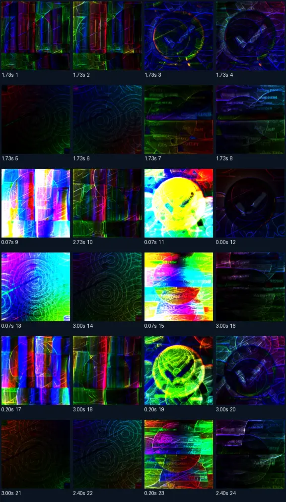
projectm · describedEVET - Zorn Church
A dark, highly saturated visualisation built around blue and indigo. The selected frames suggest ring-like forms with neon-like glow. With static inputs, output motion includes local warping, downward drift, rightward drift.
Inspect supporting evidence → projectm · described
projectm · describedEMPR - Random - Look mama, I'm on TV! 2
A dark visualisation built around violet. The selected frames suggest fine particles with soft glow. With static inputs, output motion includes local warping, leftward drift.
Inspect supporting evidence →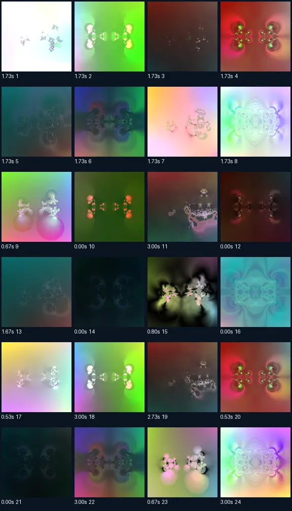
projectm · describedflexi - grind my glitch up [112]
An abstract visualisation built around red and turquoise. The selected frames suggest fine particles and ring-like forms with soft glow. With static inputs, output motion includes local warping, outward expansion. Fine source detail is strongly reduced in many tested frames.
Inspect supporting evidence →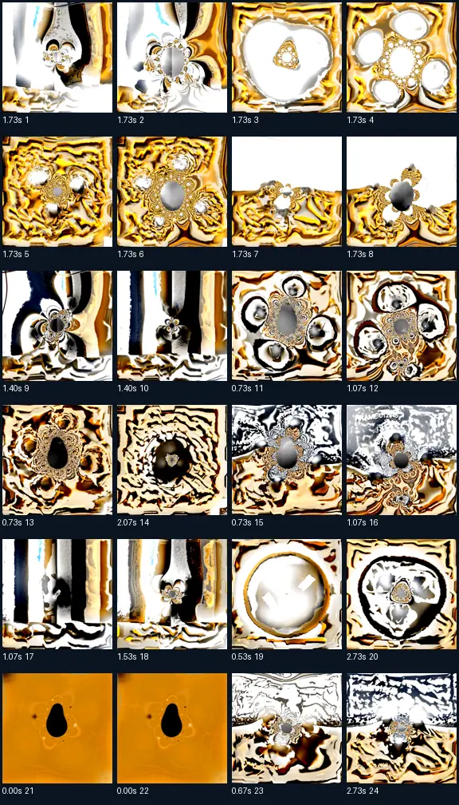
projectm · limitedva ultramix2 - 267_1 nz+ listen to death metal asshole
A bright visualisation built around orange and red. The selected frames suggest intricate branching patterns and petal-like radial geometry with fine linework. The available frames do not establish a reliable movement pattern.
Inspect supporting evidence →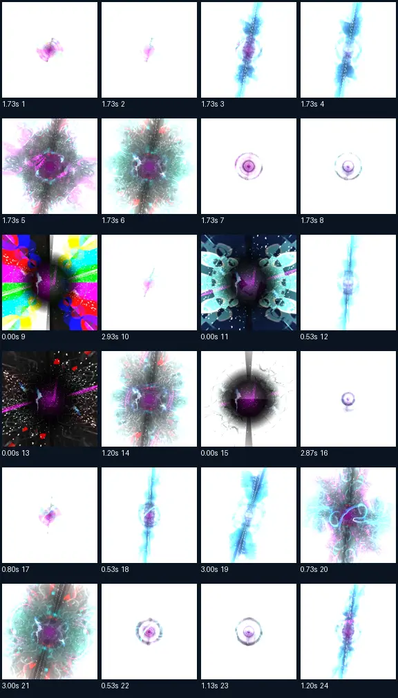
butterchurn · describedMartin N AdamFX Infusion = Phat+Yin+Eo.S_Mandala Chaser Ft AdamFX n Martin - The Beast Mandala Chaser FX H
A bright visualisation built around violet and cyan. The selected frames suggest fine particles and petal-like radial geometry with soft glow. With static inputs, output motion includes outward expansion, clockwise rotation, local warping. Some sampled frames wash out to almost pure white.
Inspect supporting evidence →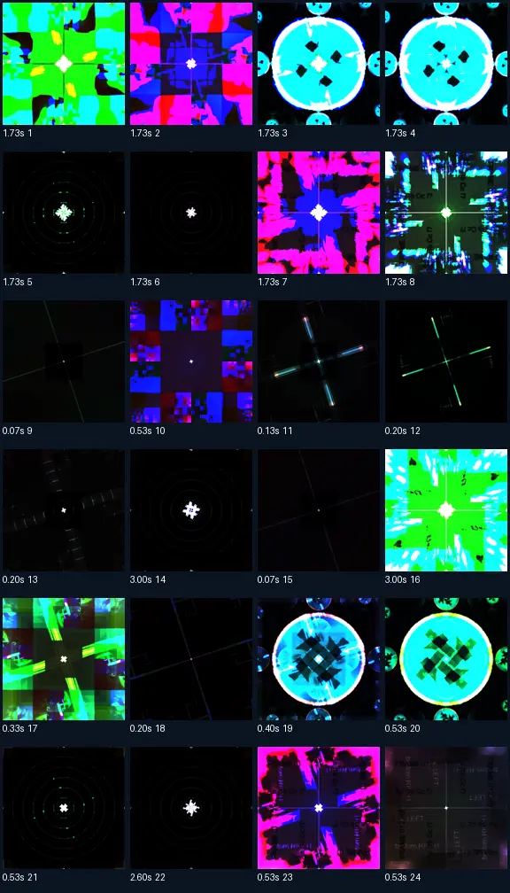
projectm · describedshifter - mandala
An abstract, highly saturated visualisation built around turquoise and violet. The selected frames suggest ring-like forms and fine particles with blocky shapes. With static inputs, output motion includes outward expansion.
Inspect supporting evidence →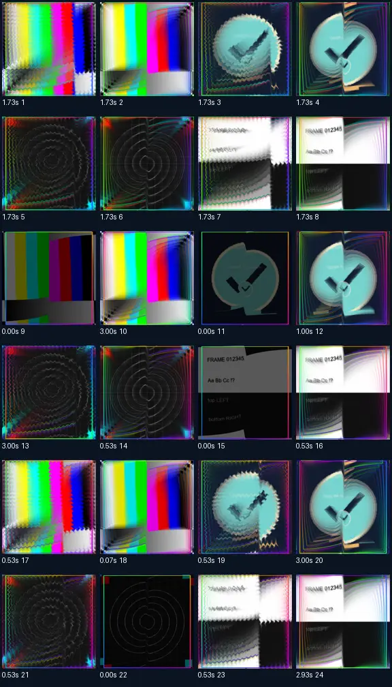
butterchurn · limitedPhat_Eo.S. - Just more trash
An abstract visualisation built around turquoise and indigo. The selected frames suggest abstract forms with smooth gradients. The available frames do not establish a reliable movement pattern.
Inspect supporting evidence → butterchurn · described
butterchurn · describedEo.S. + Phat - chasers 11 sentinel C_poltergeist_mix response daemon
An abstract visualisation built around orange and turquoise. The selected frames suggest fine particles and ring-like forms with soft glow. With static inputs, output motion includes local warping, outward expansion.
Inspect supporting evidence →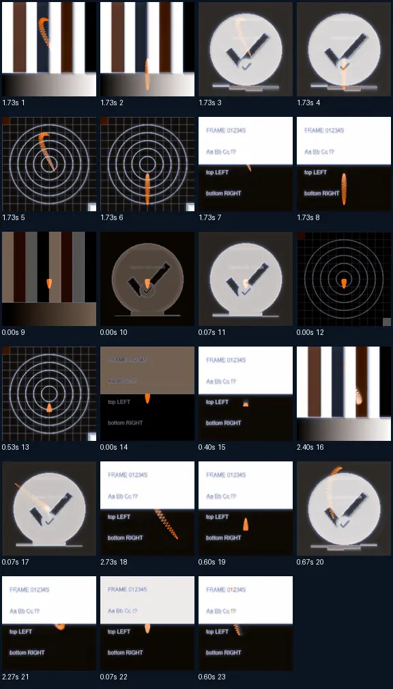
butterchurn · limitedflexi - alien canvas [random mashup]
An abstract visualisation built around blue and red. The selected frames suggest ring-like forms with soft glow. The available frames do not establish a reliable movement pattern.
Inspect supporting evidence →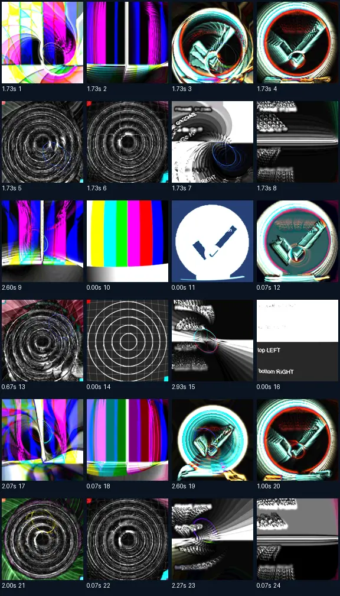
butterchurn · describedsuksma - creepy children steal your identity
An abstract visualisation built around turquoise and red. The selected frames suggest ring-like forms with smooth gradients. With static inputs, output motion includes local warping, counterclockwise rotation, clockwise rotation.
Inspect supporting evidence → butterchurn · described
butterchurn · describedAderrasi - Brakefreak-bitcore tweak
An abstract visualisation built around turquoise. The selected frames suggest ring-like forms. With static inputs, output motion includes local warping.
Inspect supporting evidence →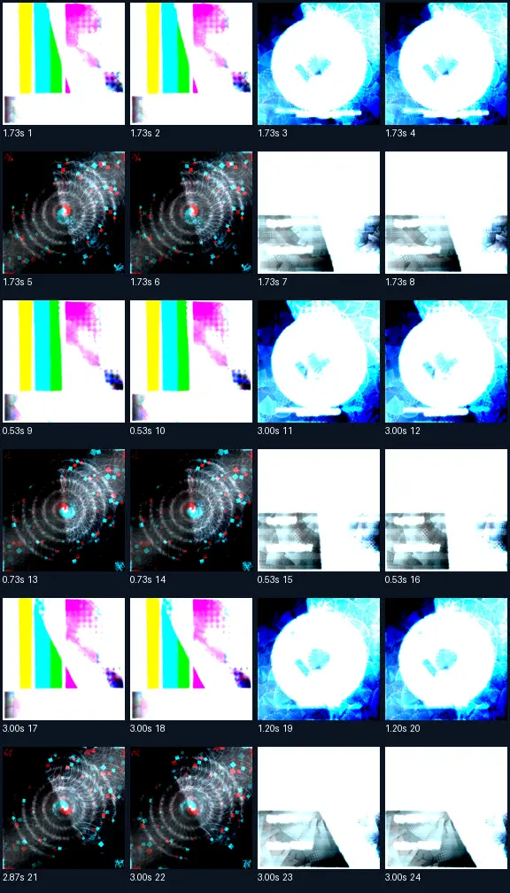
butterchurn · describedGoody + martin - crystal palace - Aqua Lumens
A bright visualisation built around cyan and turquoise. The selected frames suggest ring-like forms with soft glow. With static inputs, output motion includes outward expansion, local warping.
Inspect supporting evidence →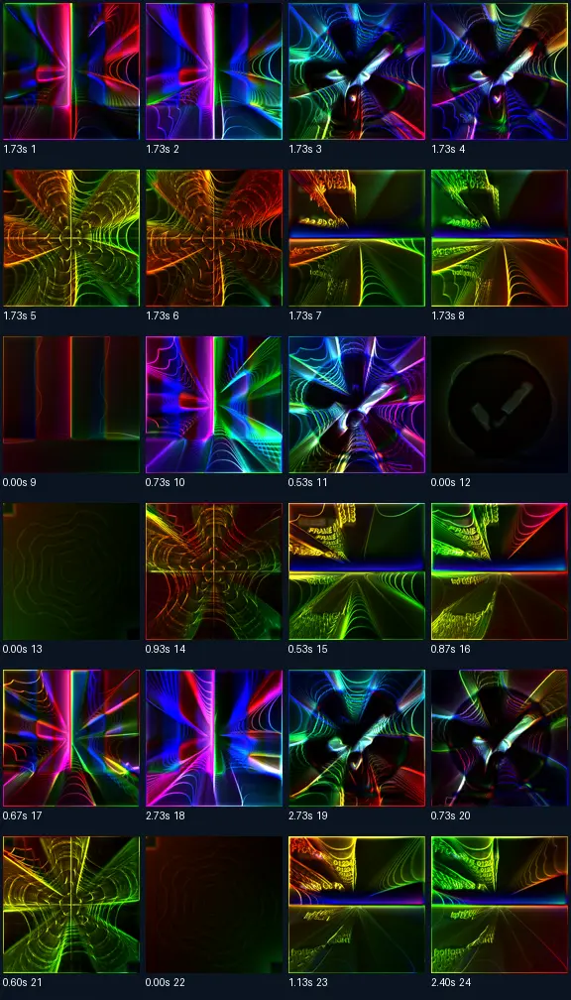
projectm · describedFlexi - hallucination #1 (Jelly)
A dark, highly saturated visualisation built around red and indigo. The selected frames suggest fine particles and petal-like radial geometry with neon-like glow. With static inputs, output motion includes local warping, clockwise rotation.
Inspect supporting evidence →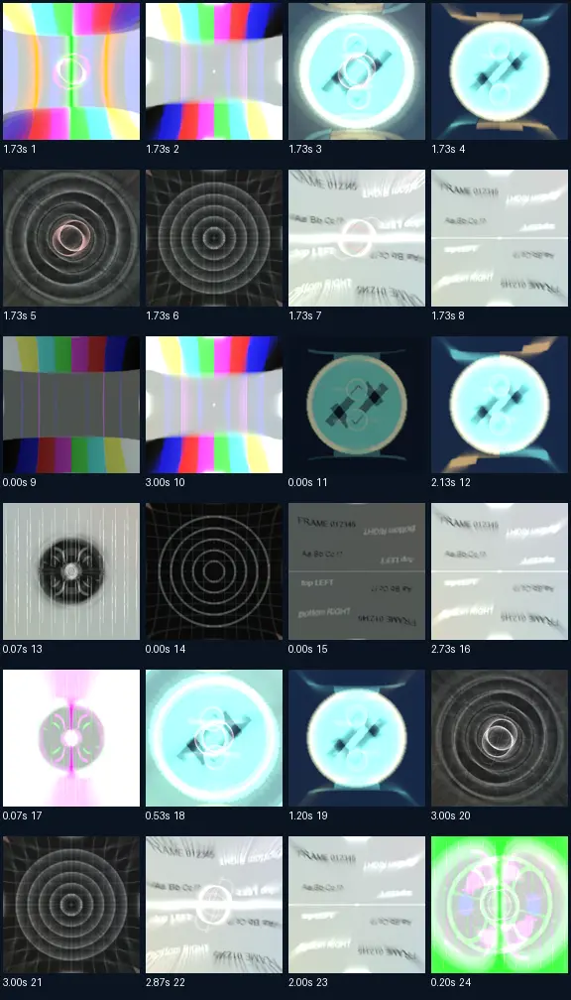
butterchurn · described_Mig_Oscilloscope022 b
A bright visualisation built around red and turquoise. The selected frames suggest ring-like forms with smooth gradients. With static inputs, output motion includes local warping, inward contraction, outward expansion.
Inspect supporting evidence →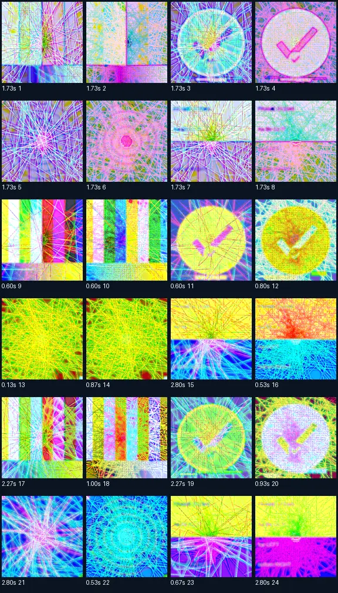
projectm · describedno rules, no judgement, only hate
A bright visualisation built around violet and orange. The selected frames suggest fine particles and ring-like forms with soft glow. With static inputs, output motion includes local warping, outward expansion. Brightness rises and falls in a recurring pulse.
Inspect supporting evidence → projectm · limited
projectm · limitedamandio c - log tower 1 pig vomit 2uqle4 dorqstre plosiph
A dark visualisation built around cyan and orange. The selected frames suggest petal-like radial geometry and ring-like forms with smooth gradients. The available frames do not establish a reliable movement pattern.
Inspect supporting evidence →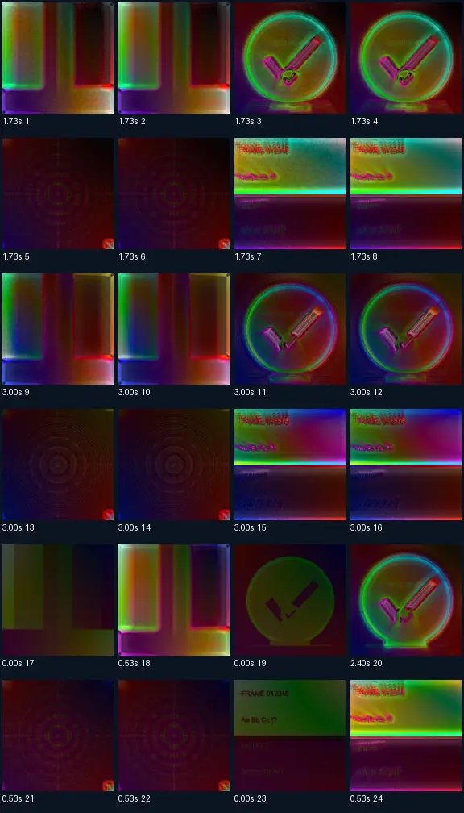
butterchurn · describedStahlregen & Geiss + Eo.S + Martin + Rovastar - Halcyon Jelly Skin
A dark, highly saturated visualisation built around pink and red. The selected frames suggest ring-like forms with smooth gradients. With static inputs, output motion includes local warping.
Inspect supporting evidence →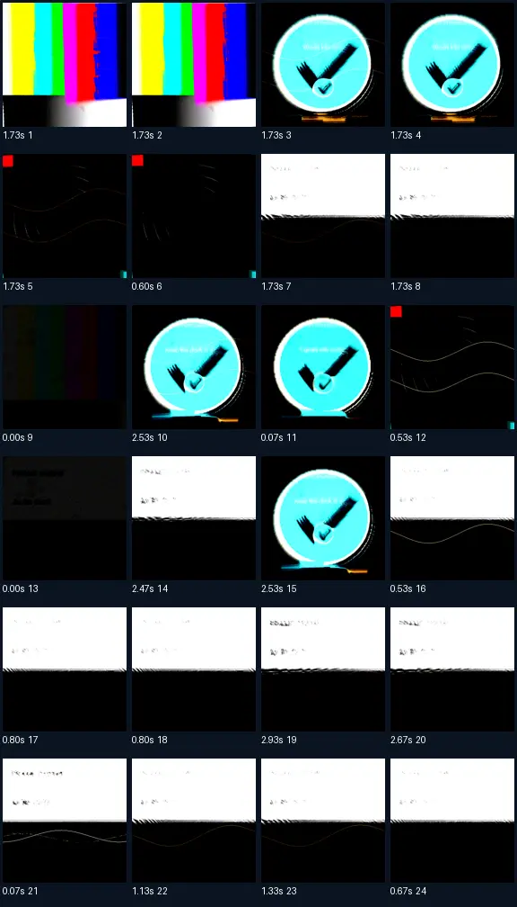
butterchurn · describedGeiss - Explosion 2
An abstract, highly saturated visualisation built around turquoise and red. The selected frames suggest ring-like forms with smooth gradients. With static inputs, output motion includes local warping.
Inspect supporting evidence →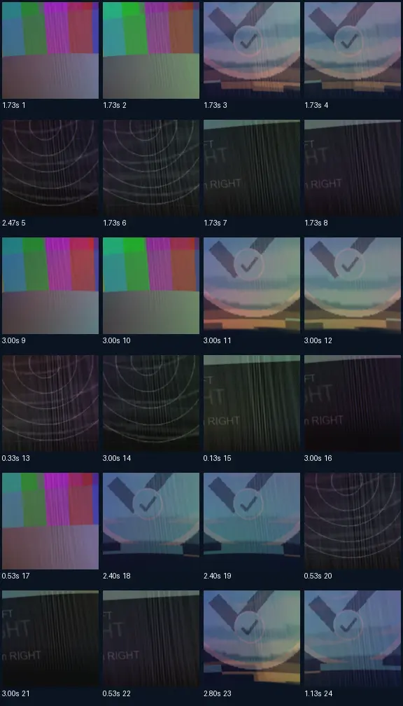
projectm · describedfiShbRaiN - city slicker
A dark visualisation built around turquoise and indigo. The selected frames suggest ring-like forms with smooth gradients. With static inputs, output motion includes outward expansion, rightward drift, clockwise rotation. Fine source detail is strongly reduced in many tested frames.
Inspect supporting evidence →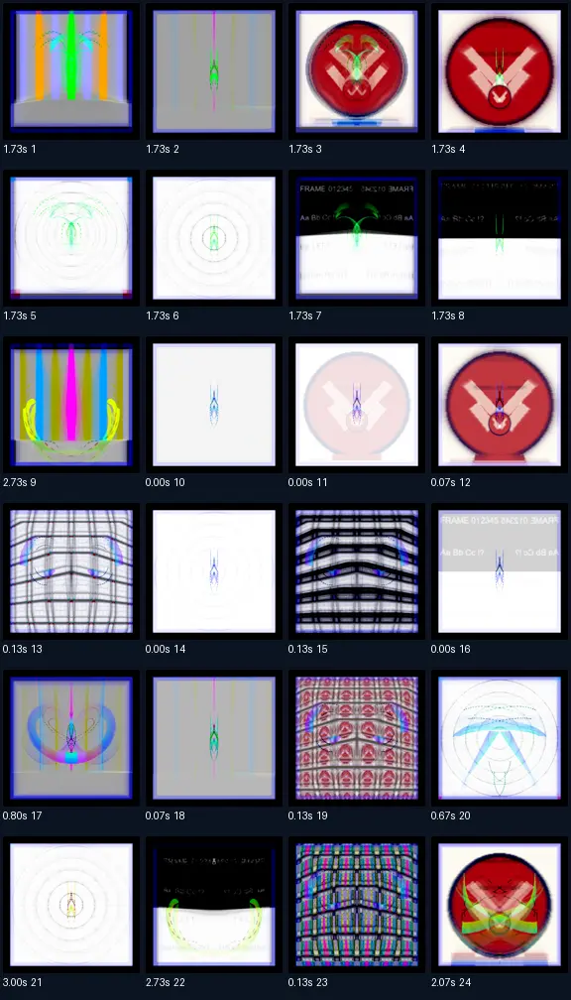
butterchurn · limitedEo.S. - glowsticks v2 05 and proton lights (+Krash′s beat code) _Phat_remix03 madhatter_v2
An abstract visualisation built around indigo and pink. The selected frames suggest ring-like forms. The available frames do not establish a reliable movement pattern.
Inspect supporting evidence → butterchurn · described
butterchurn · describedflexi + cope - i blew you a soap bubble now what - feel the projection you are, connected to it all nz+ wrepwrimindloss w8
A dark, highly saturated visualisation built around green and red. The selected frames suggest ring-like forms and petal-like radial geometry. With static inputs, output motion includes local warping, inward contraction.
Inspect supporting evidence →Evidence preview unavailable
projectm · unavailablemartin - liquid gold
No usable rendered frames are available; movement, artefacts and style remain unknown.
Inspect supporting evidence →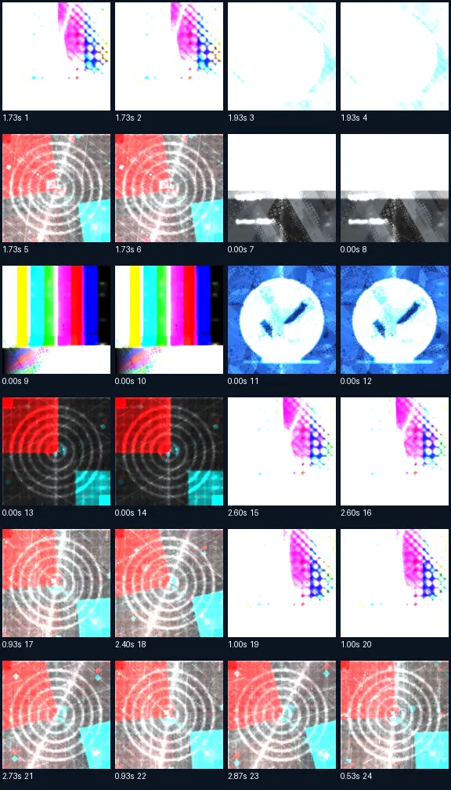
projectm · describedGoody + martin - crystal palace - Ocular Anima - not so g slow
A bright visualisation built around turquoise and cyan. The selected frames suggest ring-like forms. With static inputs, output motion includes local warping, outward expansion. Some sampled frames wash out to almost pure white.
Inspect supporting evidence → butterchurn · limited
butterchurn · limitedGeiss - Artifact Plasma
A bright visualisation built around cyan and blue. The selected frames suggest fine particles and ring-like forms with soft glow. The available frames do not establish a reliable movement pattern.
Inspect supporting evidence →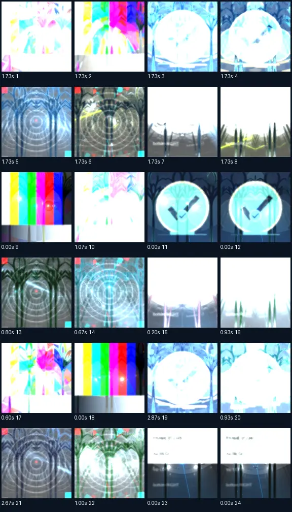
projectm · limitedmartin - flexi - laser dome [bipolar focus intent] - ng0a
A bright visualisation built around cyan and turquoise. The selected frames suggest fine particles and ring-like forms with soft glow. The available frames do not establish a reliable movement pattern.
Inspect supporting evidence →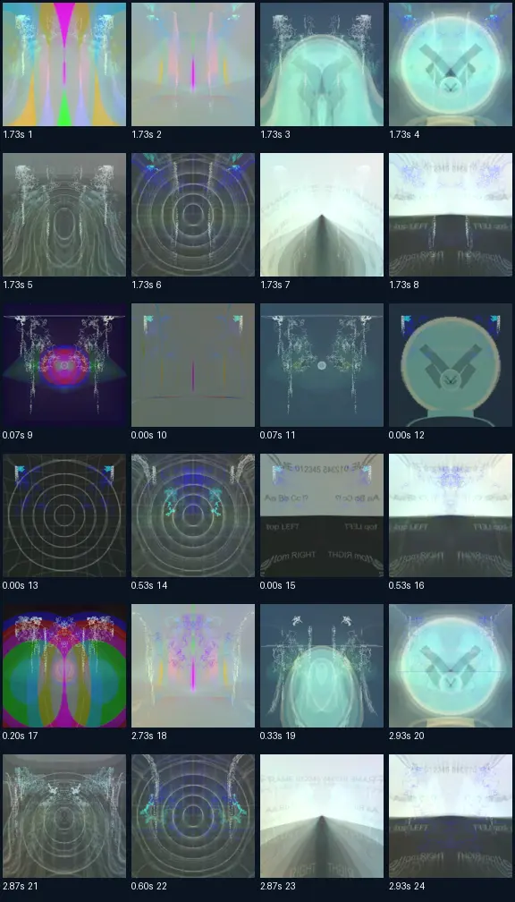
butterchurn · limitedfiShbRaiN - one step beyond (jelly remix)
An abstract visualisation built around turquoise and cyan. The selected frames suggest ring-like forms and petal-like radial geometry. The available frames do not establish a reliable movement pattern.
Inspect supporting evidence →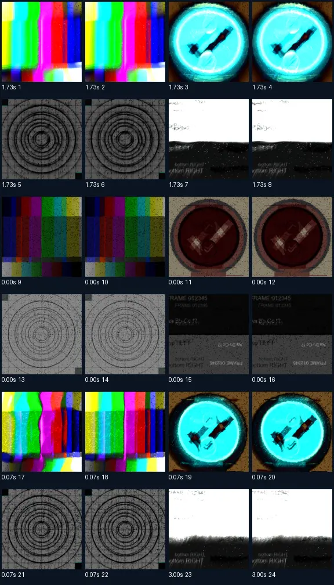
projectm · describedloin bowel - don't you understand baby, i don't want a big studio in the hills - how to impress dullards bang
An abstract visualisation built around turquoise and cyan. The selected frames suggest fine particles and ring-like forms with soft glow. With static inputs, output motion includes outward expansion, local warping, rightward drift.
Inspect supporting evidence → butterchurn · described
butterchurn · describedmartin + flexi - diamond cutter [prismaticvortex.com] - camille - i wish i wish i wish i was constrained
A dark visualisation built around red and turquoise. The selected frames suggest ring-like forms with smooth gradients. With static inputs, output motion includes local warping, inward contraction, outward expansion.
Inspect supporting evidence → projectm · described
projectm · describedmartin - city lights v2
An abstract visualisation built around turquoise and magenta. The selected frames suggest fine particles with soft glow. With static inputs, output motion includes downward drift, outward expansion, rightward drift.
Inspect supporting evidence →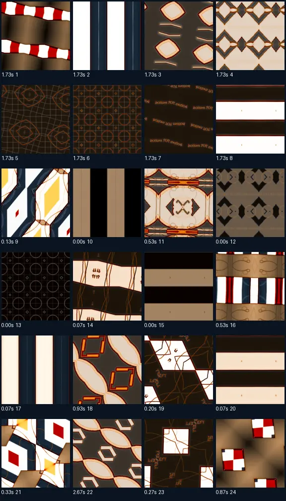
butterchurn · describedflexi + fishbrain - warpcraft [random mashup 3]
An abstract visualisation built around red and orange. The selected frames suggest striped patterns and ring-like forms with blocky shapes. With static inputs, output motion includes local warping, clockwise rotation, rightward drift.
Inspect supporting evidence →Evidence preview unavailable
butterchurn · unavailableZylot - Age of Science (seeking truth mix)
No usable rendered frames are available; movement, artefacts and style remain unknown.
Inspect supporting evidence → projectm · described
projectm · described$$$ Royal - Mashup (104)
An abstract visualisation built around turquoise and indigo. The selected frames suggest ring-like forms and striped patterns with fine linework. With static inputs, output motion includes counterclockwise rotation, outward expansion, local warping.
Inspect supporting evidence →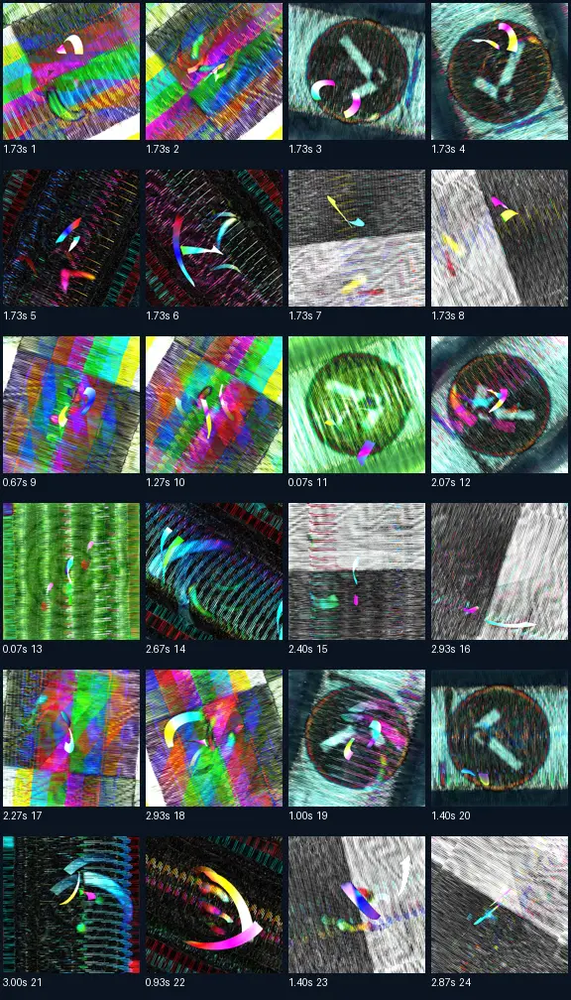
projectm · limitedsuksma - no contigency for chaos
An abstract visualisation built around turquoise and cyan. The selected frames suggest ring-like forms and fine particles with soft glow. The available frames do not establish a reliable movement pattern.
Inspect supporting evidence →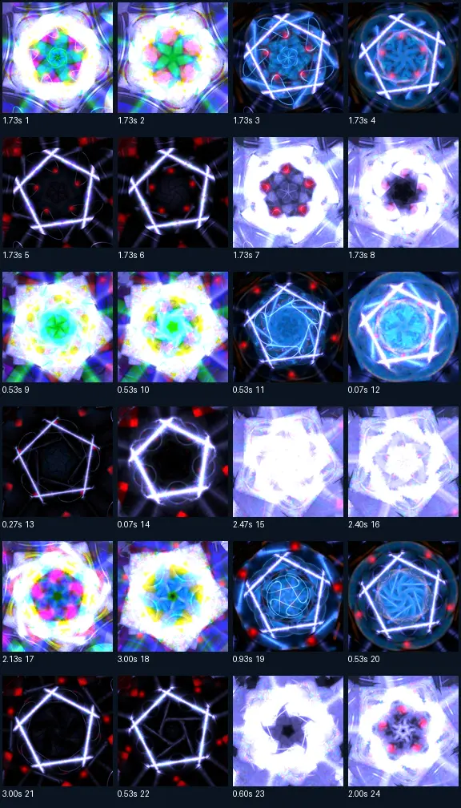
projectm · describedSerge + martin - crystal palace star003
An abstract visualisation built around blue and indigo. The selected frames suggest ring-like forms and petal-like radial geometry with neon-like glow. With static inputs, output motion includes local warping. Brightness rises and falls in a recurring pulse. Some sampled frames wash out to almost pure white.
Inspect supporting evidence → projectm · limited
projectm · limitedFlexi - disruptor [vision of eggs]
A dark visualisation built around turquoise and red. The available frames do not establish a reliable movement pattern.
Inspect supporting evidence →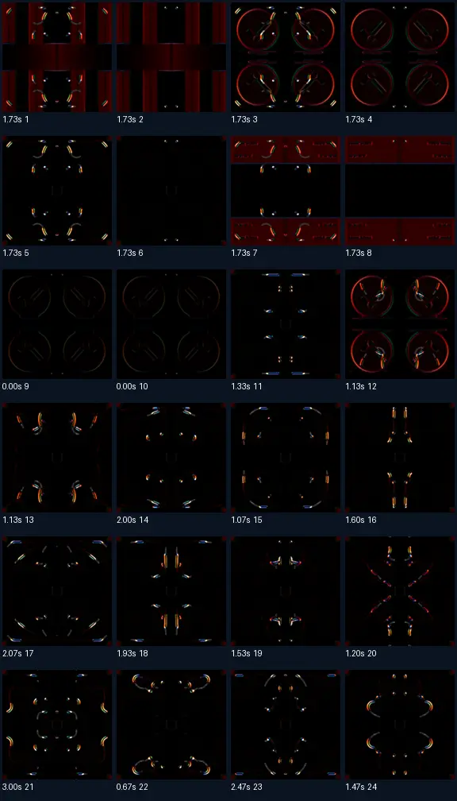
projectm · describedsuksma - chemosynthetic nosferatu - automating transformation with biochrome nostril suppositories2
A dark, highly saturated visualisation built around red and pink. The selected frames suggest ring-like forms. Textured frames remain visually stationary in the sampled window.
Inspect supporting evidence → butterchurn · limited
butterchurn · limitedGeiss - Flower
A bright visualisation built around turquoise and violet. The selected frames suggest ring-like forms and striped patterns with smooth gradients. The available frames do not establish a reliable movement pattern.
Inspect supporting evidence →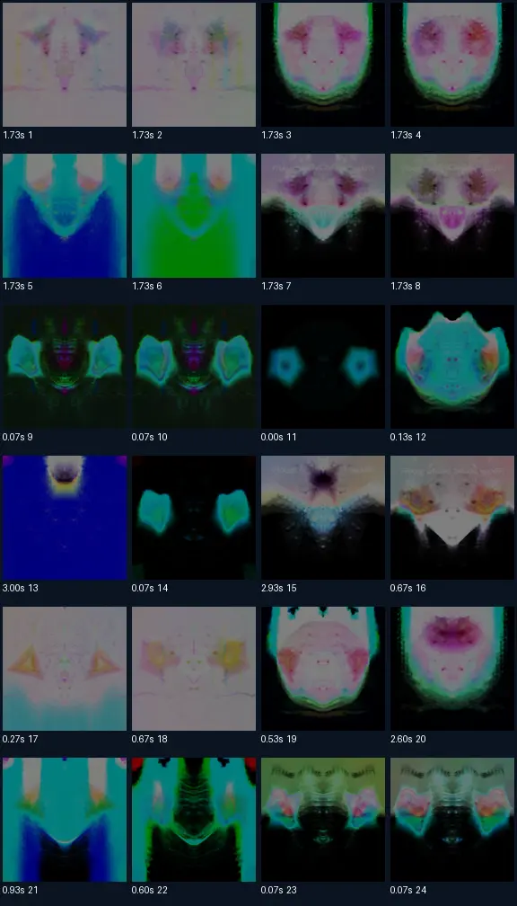
projectm · describedphat_CloseIncouneters
A dark visualisation built around turquoise and green. With static inputs, output motion includes local warping, inward contraction. Fine source detail is strongly reduced in many tested frames.
Inspect supporting evidence → projectm · limited
projectm · limitedORB - Acid Cycle [ En D's Sweet taste of diffusion and black magik
A dark visualisation built around largely monochrome tones. The available frames do not establish a reliable movement pattern. Some sampled frames are almost completely black.
Inspect supporting evidence →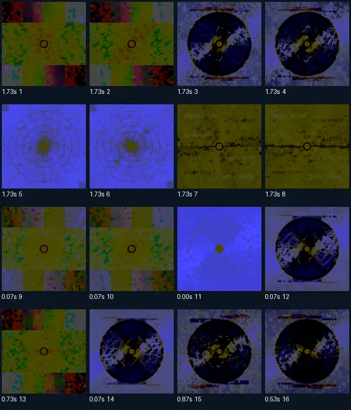
butterchurn · describedORB - Lava Lamp
A dark, highly saturated visualisation built around indigo and orange. The selected frames suggest ring-like forms with soft glow. With static inputs, output motion includes local warping.
Inspect supporting evidence →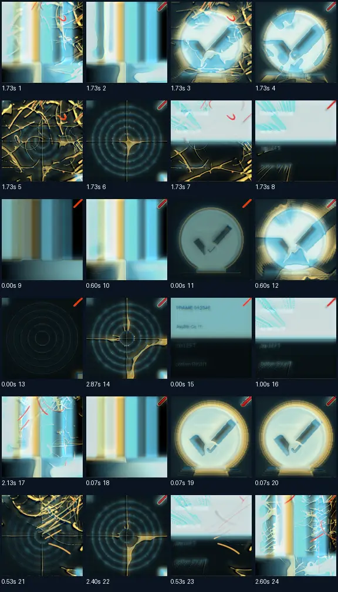
projectm · describedorb - acid cycle [flexi shader mix] - yaqui graph2
An abstract visualisation built around cyan and turquoise. The selected frames suggest ring-like forms. With static inputs, output motion includes local warping, outward expansion.
Inspect supporting evidence →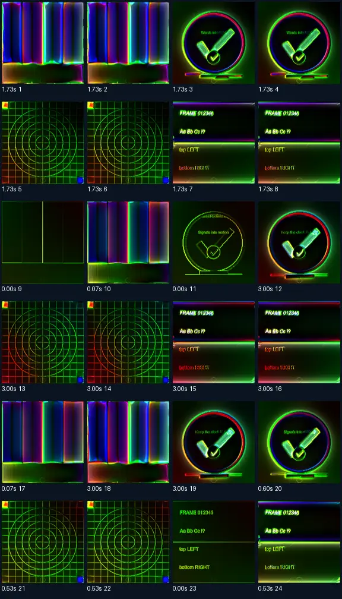
butterchurn · limitedFlexi - truly soft piece of software - this is generic texturing (Jelly)
A dark, highly saturated visualisation built around lime and yellow. The selected frames suggest grid-like geometry and ring-like forms with smooth gradients. The available frames do not establish a reliable movement pattern.
Inspect supporting evidence →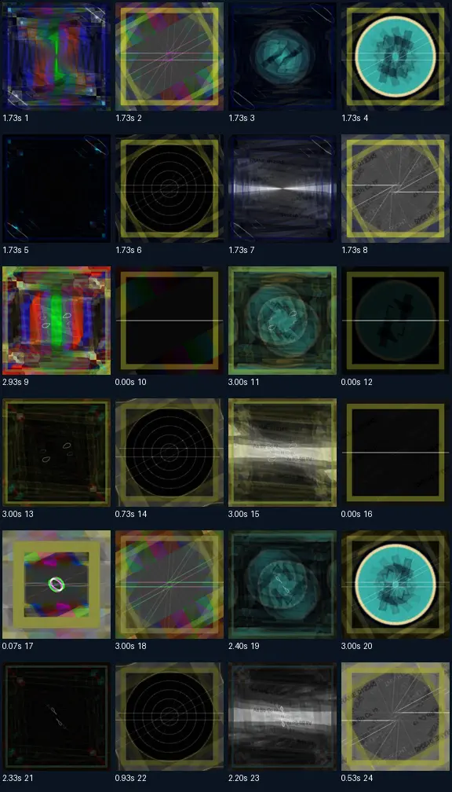
butterchurn · limitedUnchained - Beat Demo 2.5
A dark visualisation built around orange and blue. The selected frames suggest ring-like forms. The available frames do not establish a reliable movement pattern.
Inspect supporting evidence →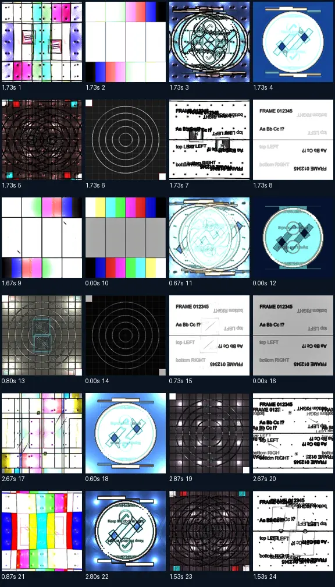
butterchurn · limitedmartin - Thinking about you
A bright visualisation built around blue and red. The selected frames suggest ring-like forms and grid-like geometry with smooth gradients. The available frames do not establish a reliable movement pattern.
Inspect supporting evidence →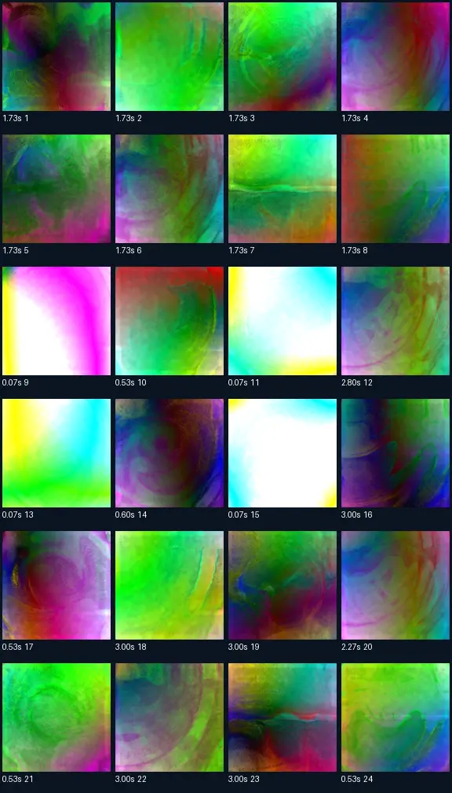
projectm · describedsuksma - traverse jelly needlescape
An abstract, highly saturated visualisation built around green and lime. The selected frames suggest ring-like forms. With static inputs, output motion includes local warping, rightward drift, clockwise rotation. Fine source detail is strongly reduced in many tested frames.
Inspect supporting evidence →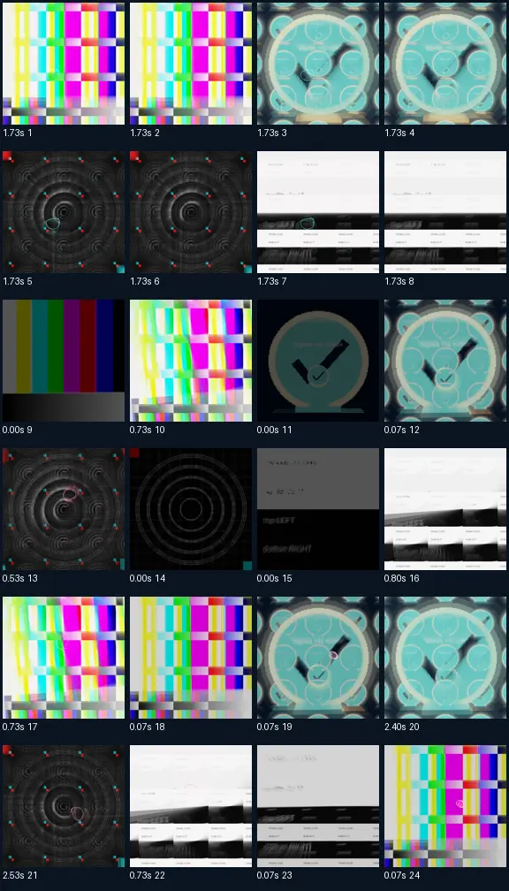
butterchurn · limitedGeiss - Rose 4 (composite remix)
An abstract visualisation built around turquoise and red. The selected frames suggest ring-like forms. The available frames do not establish a reliable movement pattern.
Inspect supporting evidence →butterchurn · describedGeiss - Swirlie 4
An abstract visualisation built around turquoise and blue. The selected frames suggest ring-like forms. With static inputs, output motion includes counterclockwise rotation, downward drift.
Inspect supporting evidence →butterchurn · limitedVarious - Fire and Brimstone
An abstract visualisation built around orange and lime. The selected frames suggest ring-like forms with soft edges. The available frames do not establish a reliable movement pattern.
Inspect supporting evidence →projectm · limitedRovastar - Snapshot Of Space
A bright visualisation built around violet and red. The selected frames suggest ring-like forms and fine particles with smooth gradients. With static inputs, output motion includes local warping, outward expansion. Some sampled frames wash out to almost pure white.
Inspect supporting evidence →projectm · describedshifter - spincycle b
A dark, highly saturated visualisation built around pink and red. The selected frames suggest fine particles and ring-like forms with soft edges. With static inputs, output motion includes local warping, upward drift. Brightness rises and falls in a recurring pulse. Fine source detail is strongly reduced in many tested frames.
Inspect supporting evidence →projectm · describedORB - Waaa (LamersAss Remix 3)
A dark visualisation built around cyan and turquoise. The selected frames suggest ring-like forms with smooth gradients. With static inputs, output motion includes local warping, outward expansion, inward contraction.
Inspect supporting evidence →butterchurn · limitedmartin - mandelbox explorer - high speed demo version [Flexi's diffuse wave] [random mashup]
An abstract visualisation built around cyan and blue. The selected frames suggest ring-like forms and striped patterns with smooth gradients. The available frames do not establish a reliable movement pattern. Fine source detail is strongly reduced in many tested frames.
Inspect supporting evidence → butterchurn · described
butterchurn · describedAn AdamFX n Martin Infusion 2 flexi - Why The Sky Looks Diffrent Today - AdamFx n Martin Infusion - Tack Tile Disfunction B
A bright visualisation built around turquoise and violet. The selected frames suggest abstract forms with blocky shapes. With static inputs, output motion includes inward contraction, local warping, leftward drift. Brightness rises and falls in a recurring pulse. Some sampled frames wash out to almost pure white.
Inspect supporting evidence →projectm · describedTonyMilkdrop - Haunted [MashUp]
An abstract visualisation built around violet and turquoise. The selected frames suggest ring-like forms with smooth gradients. With static inputs, output motion includes outward expansion, counterclockwise rotation.
Inspect supporting evidence →projectm · describedMilkTop HDFX Presets Ft Aderrasi,AdamFX,RovaStar,ShadowHarlequin,Martin n Flexi ft Baked - BitStorm 2
A dark visualisation built around indigo and red. The selected frames suggest petal-like radial geometry and ring-like forms with neon-like glow. With static inputs, output motion includes local warping. Brightness rises and falls in a recurring pulse.
Inspect supporting evidence → projectm · described
projectm · describedRovastar + Loadus + Geiss - Tone-mapped FractalDrop 7b
A dark visualisation built around red and orange. The selected frames suggest ring-like forms and fine particles with soft glow. With static inputs, output motion includes local warping, counterclockwise rotation, inward contraction.
Inspect supporting evidence → butterchurn · described
butterchurn · describedshifter - tumbling cubes
A dark visualisation built around turquoise and red. The selected frames suggest ring-like forms. With static inputs, output motion includes local warping, outward expansion, counterclockwise rotation.
Inspect supporting evidence →butterchurn · limitedEo.S. - pointfield 04 arcs demon_phat edit_v3
A dark visualisation built around turquoise and green. The selected frames suggest ring-like forms with neon-like glow. The available frames do not establish a reliable movement pattern.
Inspect supporting evidence →projectm · limitedPhat_EoS_Algorithm
An abstract, highly saturated visualisation built around green. The selected frames suggest fine particles and ring-like forms with soft glow. The available frames do not establish a reliable movement pattern. Fine source detail is strongly reduced in many tested frames.
Inspect supporting evidence →projectm · describedEVET - Lovegates
An abstract visualisation built around turquoise and pink. The selected frames suggest ring-like forms with smooth gradients. With static inputs, output motion includes local warping.
Inspect supporting evidence → projectm · described
projectm · describedTonyMilkdrop - Angels Of Glory [Flexi - arrogance amplifier + alien complex] --- Isosceles edit
A dark visualisation built around cyan and turquoise. The selected frames suggest ring-like forms and fine particles with soft glow. With static inputs, output motion includes clockwise rotation. Brightness rises and falls in a recurring pulse. Fine source detail is strongly reduced in many tested frames.
Inspect supporting evidence → butterchurn · limited
butterchurn · limitedORB - Pastel Primer
An abstract visualisation built around orange and turquoise. The selected frames suggest fine particles and ring-like forms with soft glow. The available frames do not establish a reliable movement pattern.
Inspect supporting evidence →projectm · describedEoS - glowsticks v2 03 music shifter edit b (Stahl's Reactive RMX + flexi's reflections + phat's reflecto)
An abstract, highly saturated visualisation built around turquoise and yellow. The selected frames suggest ring-like forms with neon-like glow. With static inputs, output motion includes local warping, inward contraction. Brightness rises and falls in a recurring pulse.
Inspect supporting evidence →butterchurn · describedEo.S. + Phat - Emergent factors
A dark, highly saturated visualisation built around green and turquoise. The selected frames suggest grid-like geometry with neon-like glow. With static inputs, output motion includes downward drift, local warping, counterclockwise rotation.
Inspect supporting evidence → projectm · described
projectm · describedshifter - robotopia v2 molding chaos - little miss scale oven vs scala
An abstract, highly saturated visualisation built around cyan. The selected frames suggest fine particles and ring-like forms with soft glow. With static inputs, output motion includes outward expansion. Fine source detail is strongly reduced in many tested frames.
Inspect supporting evidence → butterchurn · described
butterchurn · describedRovastar & Zylot - Crystal Ball (Many Visions Mix)
An abstract visualisation built around turquoise and orange. The selected frames suggest ring-like forms. With static inputs, output motion includes inward contraction, outward expansion.
Inspect supporting evidence →projectm · limitedRoosta - Bursting Flood meds ye olde rotgasm
A dark visualisation built around varied colours. The selected frames suggest ring-like forms with neon-like glow. The available frames do not establish a reliable movement pattern. Fine source detail is strongly reduced in many tested frames.
Inspect supporting evidence → butterchurn · described
butterchurn · describedAderrasi - Hard Drink (Half-Infinitea)
An abstract, highly saturated visualisation built around turquoise and violet. The selected frames suggest ring-like forms with soft glow. With static inputs, output motion includes local warping.
Inspect supporting evidence →butterchurn · limitedmartin - bring up the big guns
A bright visualisation built around turquoise and cyan. The selected frames suggest fine particles and ring-like forms with soft glow. The available frames do not establish a reliable movement pattern.
Inspect supporting evidence →butterchurn · described11
A bright visualisation built around indigo and orange. The selected frames suggest fine particles with soft glow. With static inputs, output motion includes outward expansion, local warping, clockwise rotation. Some sampled frames wash out to almost pure white.
Inspect supporting evidence → projectm · described
projectm · describedshifter - crosshatch neopsy - flies in the face ov
An abstract visualisation built around red and turquoise. The selected frames suggest ring-like forms with soft glow. With static inputs, output motion includes local warping.
Inspect supporting evidence →projectm · limitedMig_028
An abstract visualisation built around turquoise and red. The selected frames suggest ring-like forms. The available frames do not establish a reliable movement pattern.
Inspect supporting evidence → butterchurn · limited
butterchurn · limitedfiShbRaiN - witchcraft
An abstract visualisation built around turquoise and green. The selected frames suggest ring-like forms with smooth gradients. The available frames do not establish a reliable movement pattern.
Inspect supporting evidence →projectm · limitedsuksma - n19 3 layer overlap opt 2
A dark visualisation built around cyan and indigo. Textured frames remain visually stationary in the sampled window. Some sampled frames are almost completely black.
Inspect supporting evidence →butterchurn · described$$$ Royal - Mashup (431)
A dark, highly saturated visualisation built around indigo and blue. The selected frames suggest fine particles and ring-like forms with soft glow. With static inputs, output motion includes local warping, outward expansion, rightward drift.
Inspect supporting evidence → projectm · limited
projectm · limitedPhat_Zylot_Eo.S. Trippy_rotation_v2_sector_mix_alt_colours
An abstract visualisation built around green and violet. The selected frames suggest ring-like forms. The available frames do not establish a reliable movement pattern.
Inspect supporting evidence →butterchurn · limitedGeiss - Confetti (Kaleidoscope Mix) (color saturation boosted)
An abstract, highly saturated visualisation built around turquoise and indigo. The selected frames suggest petal-like radial geometry. With static inputs, output motion includes outward expansion, clockwise rotation, local warping. Some sampled frames are almost completely black.
Inspect supporting evidence →projectm · limitedStahlregen - Spiral (Oh god my eyes, it burns! 3)_1
A bright visualisation built around violet and turquoise. The selected frames suggest ring-like forms with smooth gradients. The available frames do not establish a reliable movement pattern. Some sampled frames wash out to almost pure white.
Inspect supporting evidence → projectm · limited
projectm · limitedSerge + martin - crystal palace bubble004
An abstract visualisation built around orange and blue. The selected frames suggest fine particles and petal-like radial geometry with soft glow. The available frames do not establish a reliable movement pattern. Some sampled frames wash out to almost pure white.
Inspect supporting evidence → projectm · limited
projectm · limitedWaltra - Sudden 2
A bright visualisation built around turquoise and cyan. The selected frames suggest ring-like forms and fine particles with soft glow. The available frames do not establish a reliable movement pattern. Fine source detail is strongly reduced in many tested frames.
Inspect supporting evidence →butterchurn · describedKrash + Rovastar - Rainbow Orb 2 Peacock (Bmelgren′s Compelling Vision)
An abstract visualisation built around turquoise and red. The selected frames suggest ring-like forms and fine particles with soft glow. With static inputs, output motion includes outward expansion, inward contraction, local warping.
Inspect supporting evidence →butterchurn · limitedRovastar + Geiss - Approach (Vectrip Mix) - painterly
An abstract visualisation built around turquoise and red. The selected frames suggest ring-like forms and fine particles with smooth gradients. The available frames do not establish a reliable movement pattern.
Inspect supporting evidence →projectm · limitedshifter + Flexi - liquid circuitry from the pataoblivion hive view selves in light of hoggina
An abstract visualisation built around cyan. The selected frames suggest ring-like forms with smooth gradients. The available frames do not establish a reliable movement pattern.
Inspect supporting evidence → projectm · described
projectm · describedsuksma - tetraxectsual aeliaen kkuhltz --- Isosceles edit13
An abstract, highly saturated visualisation built around red and orange. The selected frames suggest ring-like forms. With static inputs, output motion includes outward expansion, clockwise rotation. Fine source detail is strongly reduced in many tested frames.
Inspect supporting evidence →butterchurn · limitedbeta106.S. + Phat - sentinel linearity b nz+ mbinistre ov mbajiq
An abstract, highly saturated visualisation built around red and yellow. The available frames do not establish a reliable movement pattern.
Inspect supporting evidence →projectm · limitednil - Cid and Lucy
A dark visualisation built around green and indigo. The selected frames suggest ring-like forms with smooth gradients. With static inputs, output motion includes local warping, clockwise rotation, outward expansion. Fine source detail is strongly reduced in many tested frames.
Inspect supporting evidence →projectm · describedLuxXx - ChillFlower BlurFace Ib
An abstract visualisation built around indigo and turquoise. The selected frames suggest ring-like forms and petal-like radial geometry with neon-like glow. With static inputs, output motion includes local warping, clockwise rotation.
Inspect supporting evidence →projectm · describedFlexi and AdamFX - mindblob 2-0 - kaleidoscope mix b
A dark, highly saturated visualisation built around pink and violet. The selected frames suggest ring-like forms and petal-like radial geometry with smooth gradients. With static inputs, output motion includes counterclockwise rotation, outward expansion.
Inspect supporting evidence → butterchurn · limited
butterchurn · limitedGeiss + Flexi + Martin - disconnected
An abstract visualisation built around orange and cyan. The selected frames suggest ring-like forms. The available frames do not establish a reliable movement pattern.
Inspect supporting evidence →butterchurn · describedGeiss - Cauldron - painterly 3 (saturation remix)
An abstract visualisation built around turquoise and red. The selected frames suggest ring-like forms and fine particles with smooth gradients. With static inputs, output motion includes local warping, inward contraction, clockwise rotation.
Inspect supporting evidence → projectm · limited
projectm · limitedBeat it Adam FX 2 flexi + fishbrain - operation fatcap [ebb and flow of memetic ov diffusion - fnord] + EoS 11
A bright, highly saturated visualisation built around green and lime. The selected frames suggest ring-like forms and fine particles with soft glow. The available frames do not establish a reliable movement pattern.
Inspect supporting evidence →projectm · describedsuksma - vector exp 1 - couldn't not
An abstract visualisation built around indigo and orange. The selected frames suggest ring-like forms with soft edges. With static inputs, output motion includes local warping.
Inspect supporting evidence →butterchurn · limitedmartin - resonant twister
A dark, highly saturated visualisation built around turquoise and cyan. The selected frames suggest abstract forms with neon-like glow. The available frames do not establish a reliable movement pattern.
Inspect supporting evidence →projectm · limitedwhen i first mixed this, i loved it, now, because of your existence, i fucking hate it - taken over by evil mage nz+ --- Isosceles edit
An abstract visualisation built around turquoise and cyan. The selected frames suggest ring-like forms with soft glow. The available frames do not establish a reliable movement pattern. Some sampled frames wash out to almost pure white.
Inspect supporting evidence →projectm · describedAderrasi - Candy Avian
A dark visualisation built around green and red. The selected frames suggest ring-like forms. With static inputs, output motion includes clockwise rotation, counterclockwise rotation, inward contraction. Fine source detail is strongly reduced in many tested frames.
Inspect supporting evidence →butterchurn · limited_Flexi - mindblob [where it′s at now] 3
A dark, highly saturated visualisation built around violet. The selected frames suggest ring-like forms with smooth gradients. The available frames do not establish a reliable movement pattern.
Inspect supporting evidence →projectm · limitedKrash & Rovastar - A Million Miles from Earth (Ripple Mix)
A dark, highly saturated visualisation built around red and orange. The selected frames suggest abstract forms with soft glow. The available frames do not establish a reliable movement pattern. Fine source detail is strongly reduced in many tested frames.
Inspect supporting evidence →butterchurn · limitedshifter - digi
A dark visualisation built around turquoise and cyan. The selected frames suggest ring-like forms. The available frames do not establish a reliable movement pattern. Fine source detail is strongly reduced in many tested frames.
Inspect supporting evidence →projectm · describedsuksma - antiinorganics primal dialectomy - silently observed pain body roam
A bright visualisation built around turquoise and cyan. The selected frames suggest fine particles and ring-like forms with soft glow. With static inputs, output motion includes local warping, inward contraction.
Inspect supporting evidence →projectm · limitedGeiss - Constant Velocity
A bright visualisation built around turquoise and violet. The selected frames suggest ring-like forms with smooth gradients. The available frames do not establish a reliable movement pattern. Some sampled frames wash out to almost pure white.
Inspect supporting evidence → butterchurn · described
butterchurn · describedFvese-butterfly
An abstract visualisation built around indigo and turquoise. The selected frames suggest ring-like forms. With static inputs, output motion includes local warping, inward contraction. Brightness rises and falls in a recurring pulse.
Inspect supporting evidence →